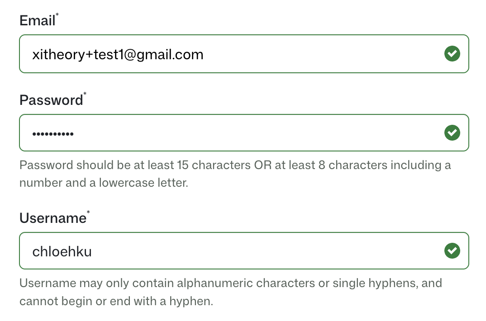
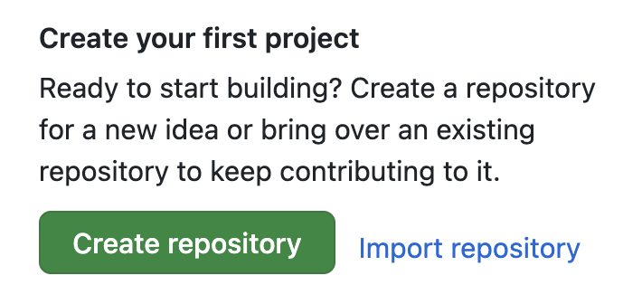
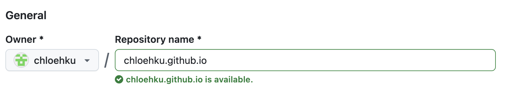
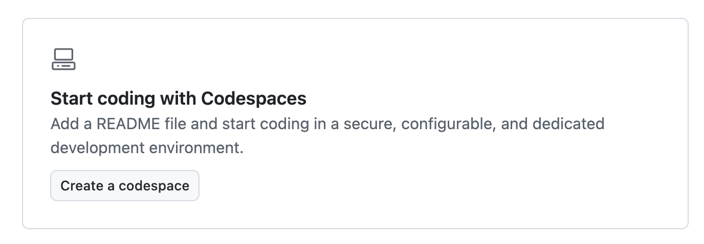
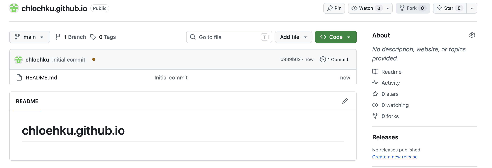
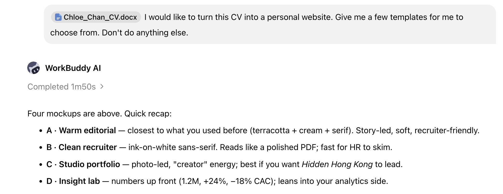
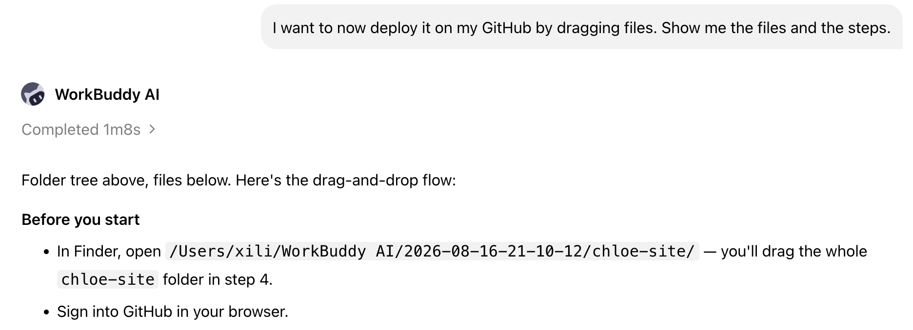
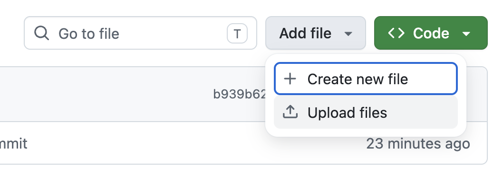
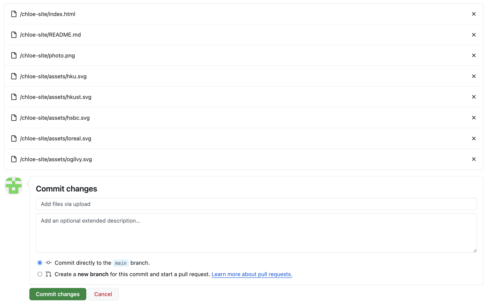

A 3-step, 13-card walkthrough · ~15 minutes
Creating your own
website.
Three short stages. About fifteen minutes from sign‑up to a live page you can send to anyone. Tick each card as you finish it — your progress saves automatically.
Step 01 of 03
Set up your
home on the internet.
GitHub will host your site for free and give it a real URL — your
name will literally become your-name.github.io. No
payment, no domain registration, no server admin.
Create a free
GitHub account.
You'll spend the rest of this walkthrough inside GitHub, so take a moment to set things up properly.

Click to enlargeYour username
becomes your URL.
Once you pick a username, it locks in as
your-username.github.io. That's the only place
it appears in your URL, so it's worth a moment of thought.
Pick a username that's…
- Short and typeable — you'll say it on calls
- Professional — same one across GitHub & LinkedIn feels clean
- Pronounceable — recruiters will try
Make a new
repository.
A repository is just a folder that holds your website's files. Think of it as the project folder for your site.
- Click the + in the top-right of any GitHub page
- Choose New repository
- Set visibility to Public (free hosting only works for public repos)

Click to enlarge
Click to enlargeName it
[username].github.io
The repo name is special. The pattern
your-name.github.io tells GitHub
“this folder is a website” — it switches from a normal
repo to a live page automatically.
chloemarketing, your repo name must be
chloemarketing.github.io — not
chloemarketing.com or chloe-website.
Open it in
Codespaces.
Codespaces is a code editor that runs in your browser — like Google Docs, but for code. Zero installs, zero setup, works on any laptop.
- Inside the repo, click the green Code button
- Open the Codespaces tab
- Hit Create codespace on main

Click to enlarge
Click to enlargeDone with step 1.
Keep this tab open.
Switch back to your GitHub repo tab and leave it open in the background. You'll upload the finished files here in step 3.
Step 02 of 03
Now have an AI
build it for you.
The hard part of a website is the design and the decisions — typography, layout, what to show. The AI does that for you in seconds. You stay in the loop as a director: you describe, it produces, you steer.
Sign in to your
AI assistant.
Pick whichever assistant you have access to. All of them can write a complete website from a prompt.
This app — no setup, no VPN, free during the trial.
OpenAI's CLI. Free with a ChatGPT account, but VPN required in some regions.
Paid Claude subscription + VPN. Powerful, terminal-style workflow.

Click to enlargeDirect the AI,
iterate, ship.
A first prompt should describe the kind of site you want, not every detail. The AI will give you something — tell it what to change. Repeat until you love it.
Click any prompt to copy it:
Step 03 of 03
Push it to
the open internet.
Last 60 seconds. GitHub Pages takes the files you upload and serves them to the world. No server to babysit — your site stays up as long as the repo exists.
Confirm Pages
is on main / root.
Back on your repo tab, open Settings → Pages. You should see a “Build and deployment” section with the source already set — but let's double-check.

Click to enlarge
Click to enlargeFind the
Upload files button.
On the main repo page (the Code tab, not Settings),
you should see an Add file ▾ dropdown.
Click it and choose Upload files.
Drop the files,
write a message, commit.
Drag index.html in. If your AI also gave you CSS,
JS, or image files, drag them too — all at once, in one batch.
A typical upload looks like:
index.htmlstyles.css(optional)app.js(optional)assets/folder (if you have images)
index.html must sit at the repo
root.

Click to enlargeStep 03 · 04
Wait about a minute.
Then watch this.
Click Deploy to simulate the build. (In real life, GitHub is doing this — you just kicked it off when you committed.)
✓ Step 03 · 05 · you did it
You're live
on the open internet.
What now?
LinkedIn bio, email signature, business cards. Once it's out there, it's out there.
Buy a your-name.com (~$10/yr) and point it at GitHub Pages in DNS settings.
Edit a file → commit → GitHub rebuilds in < 30 seconds. That's the whole workflow forever.
Drop in a privacy-friendly analytics tool (Plausible, Umami) to see who's reading.
15 cards · 3 steps · 0 minutes of your life wasted on hosting.